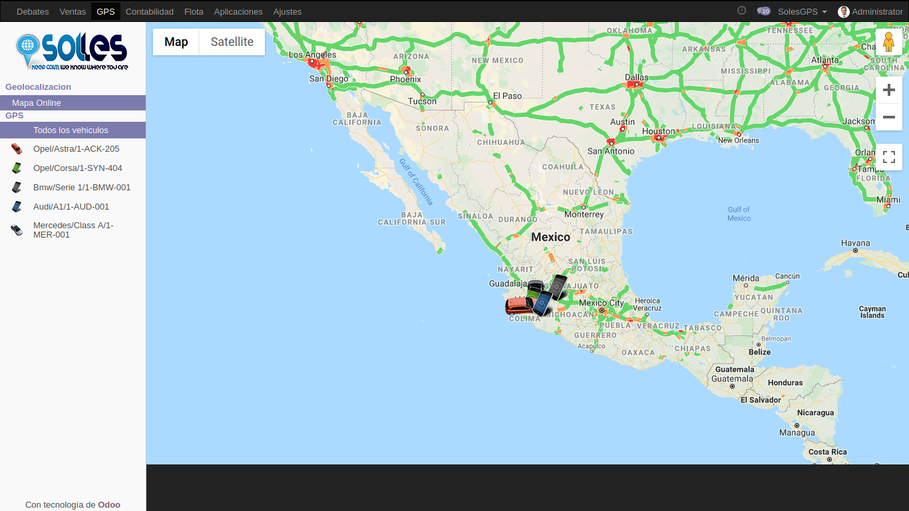
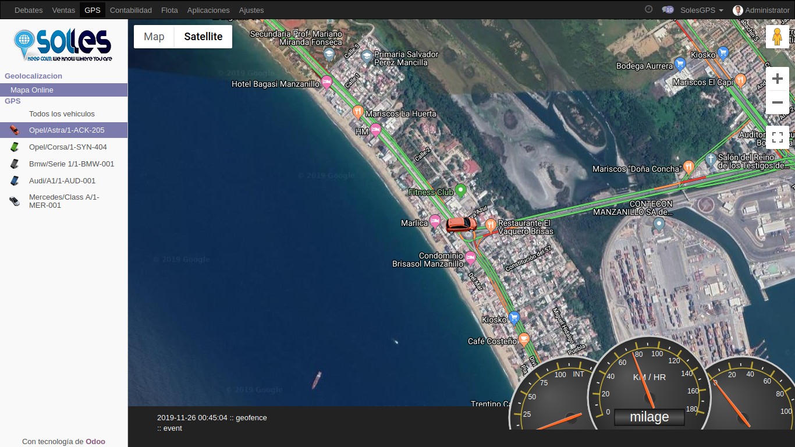

SolesGPS Map Online
With this free module, see your GPS devices on the map, updating every minute.
You can do a test with real GPS in the demo installation.
Map View and Satellite View


Locate the satellite coordinates
Migrate your GPS devices and locate satellite coordinates with time, date, speed, fuel, etc.
Contact us
For any inquiries/suggestions/difficulties please contact us directly:
Eduardo Vizcaino Granados
e.vizcaino@solesgps.com
+52 (314) 352 0972
+52 (312) 454 9998